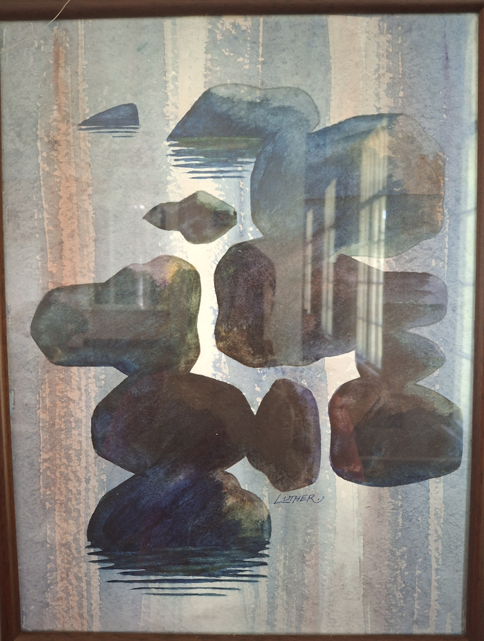
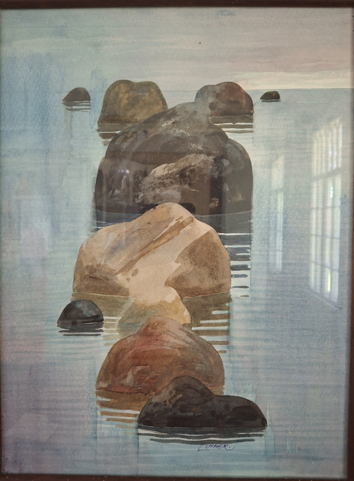
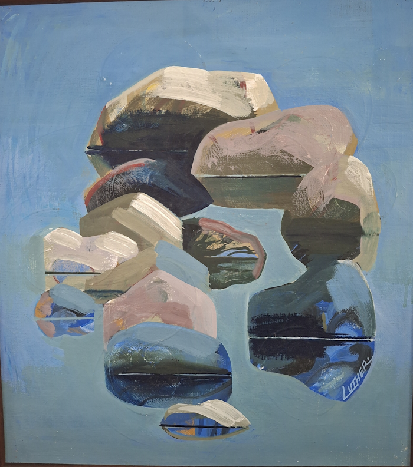
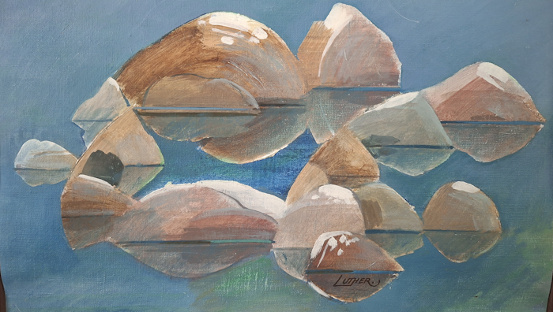
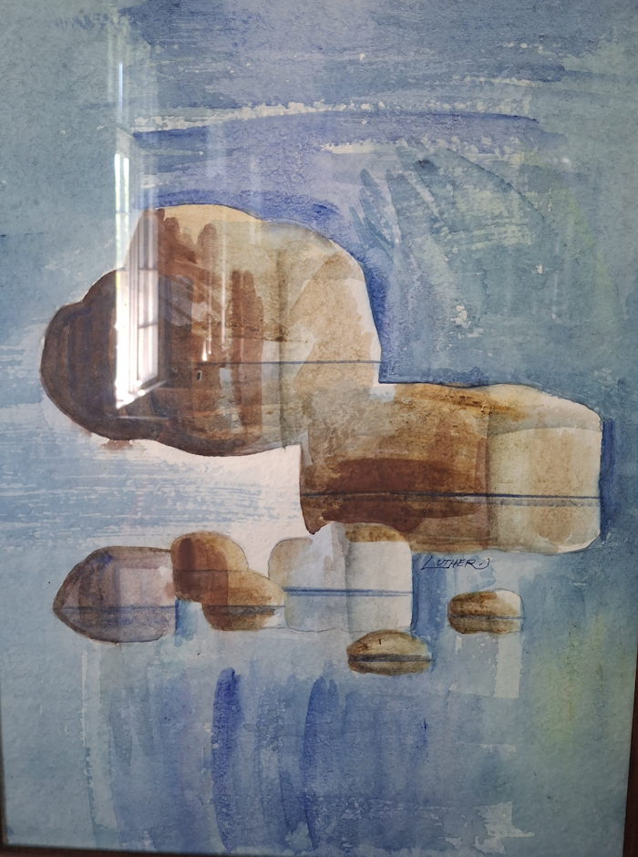
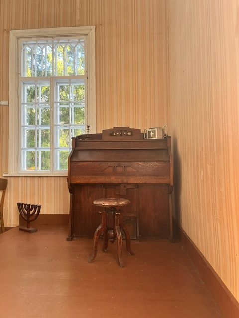

Maalide autor Walfrid Luther on sündinud 06. juulil 1932. Pere oli tulnud Nõvale 1918.a. Naissaarelt. Uskliku perena oldi kaasa aitamas Peraküla palvemaja ehitamisel ja koguduse töös. 1944.a.said nendest paadipõgenikud ja koos emaga asusid Rootsi elama Harald, Walfrid ja Helga. Poeg Richard oli jäänud sõtta. Isa surnud 1938.a. Sageli käidi ka Eestis, kui tervis lubas. Nüüd on kodutalu „Mardi“ maad Rannakülas leidnud uue omaniku.





Autor on maalinud Nõva rannakive, mis on olnud tema mälestustes. Maalid jõudsid autori soovil Nõva kogudusse nende peretuttava Vilve Hülp`i kaudu 2017. a. sügisel.
Lisaks kohaliku mehe, Nõval sündinud Gustav Terkmanni (snd. Targamaa) ehitatud Nõva kiriku orelile, on siinkandis veel ka tema orelimeistrist poja, August Terkmanni pill - vana harmoonium, mis asub Peraküla Palvemajas. Harmooniumi ehitusaasta on 1928.

Pikki aastakümneid hooldamist ja kasutamist oodanud harmoonium vajab
tõsist „arstimist“. Selle töö tegemiseks oleme leidnud meistri, kes
pilli korrastab ja uuesti helisema paneb. Üheskoos saame selleks
kaasa aidata. Ülemine või alumine do...või sol... saab olla just
Sinu nimel.
Juba suvel saab tulla korrastatud harmooniumi kauneid helisid
kuulama.
Harmooniumi fond: COOP PANK EE 93 4204 2786 4297 1901 Peraküla Palvela MTÜ. Lisainfo Silja Silver 56214381 siljasilver@hot.ee
PS! Nõvalt päriti Isa Gustavi ja poja August Terkmanni kõrgelt hinnatud pille leiab üle Eesti, neist kuulsamad Tallinna Jaani, Tallinna Pühavaimu, Lääne-Nigula, Tarvastu, Paistu, Kuusalu, Kärla, Tapa ja Nõmme Rahu kirikus, kuid neid on veelgi.